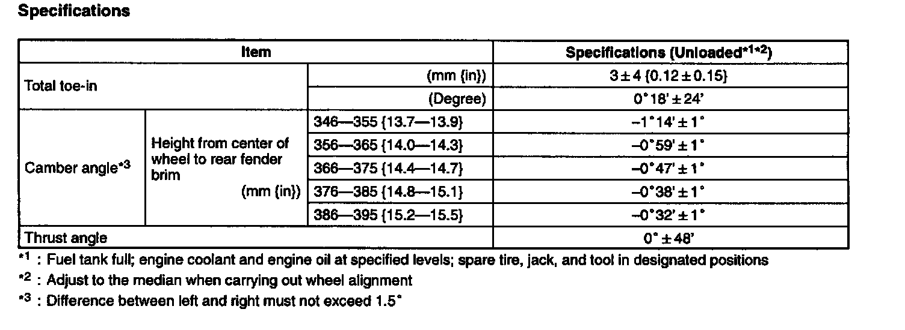
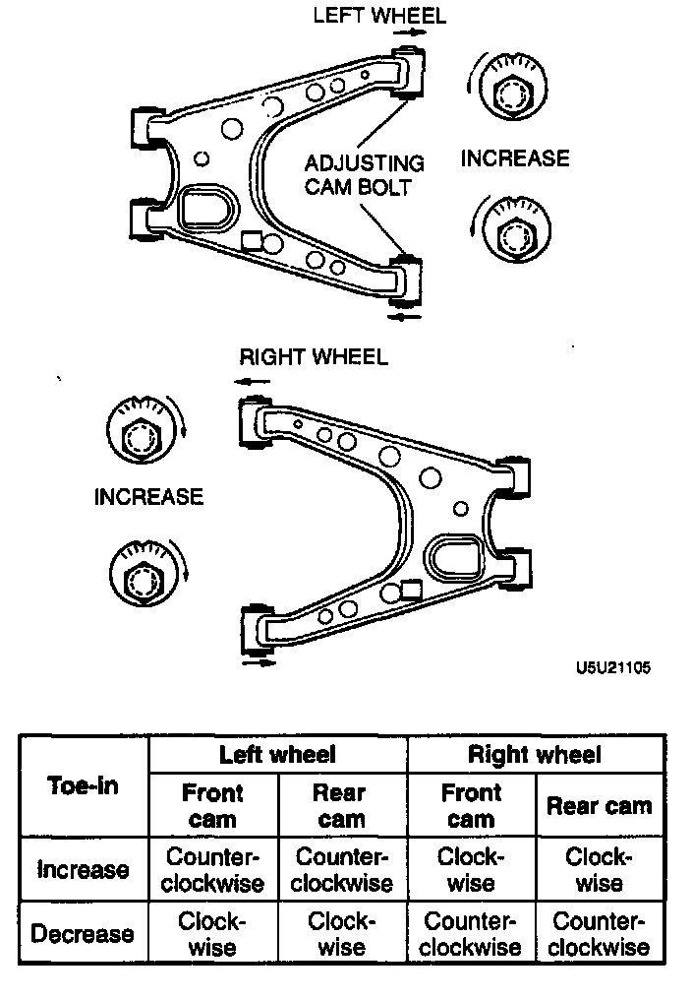
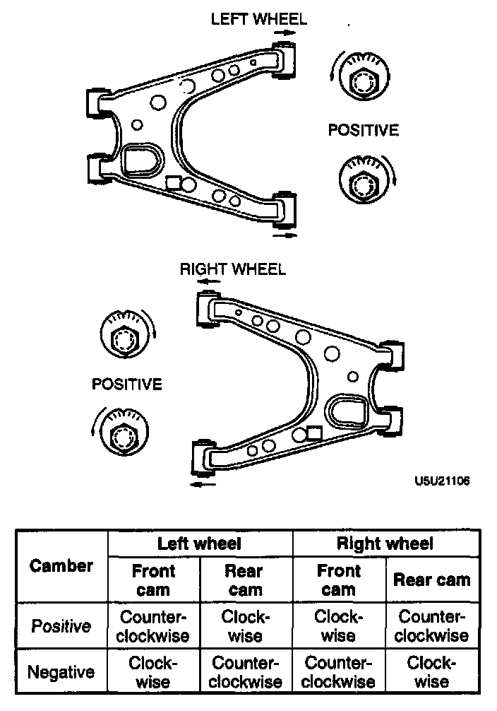

Rear Wheel Alignment
REAR WHEEL ALIGNMENT
Specifictions
TOTAL TOE-IN ADJUSTMENT
Caution:
- Adjust the toe-in before adjusting the camber.
1. Loosen the front and/or rear cam nuts.

2. Turn the front and/or rear adjusting cam bolts to provide the correct toe-in.
Note:
- Turning the front cam one graduation changes the toe-in about 2.3 mm (0.11 inch) and the camber about 13'. Turning the rear cam one graduation changes the toe-in about 2.3 mm (0.11 inch) and the camber about 8'.
3. Adjust the camber.
CAMBER ADJUSTMENT
Caution
- Adjust the camber after adjusting the toe-in.
1. Loosen the front and rear cam nuts.

2. Turn the front and rear adjusting cam bolts the same amount in the opposite direction to provide the correct camber angle.
Note:
- Turning the front cam one graduation changes the camber about 13' and the toe-in about 2.3 mm (0.11 inch). Turning the rear cam one graduation changes the camber about 8' and the toe-in about 2.3 mm (0.11 inch).
- If the cam cannot be turned far enough to make the adjustment, begin adjustment of the toe-in again using the other cam.
3. Tighten the nuts.
Tightening torque 73-95 Nm (7.4-9.7 kg-m, 54-70 ft. lbs.)